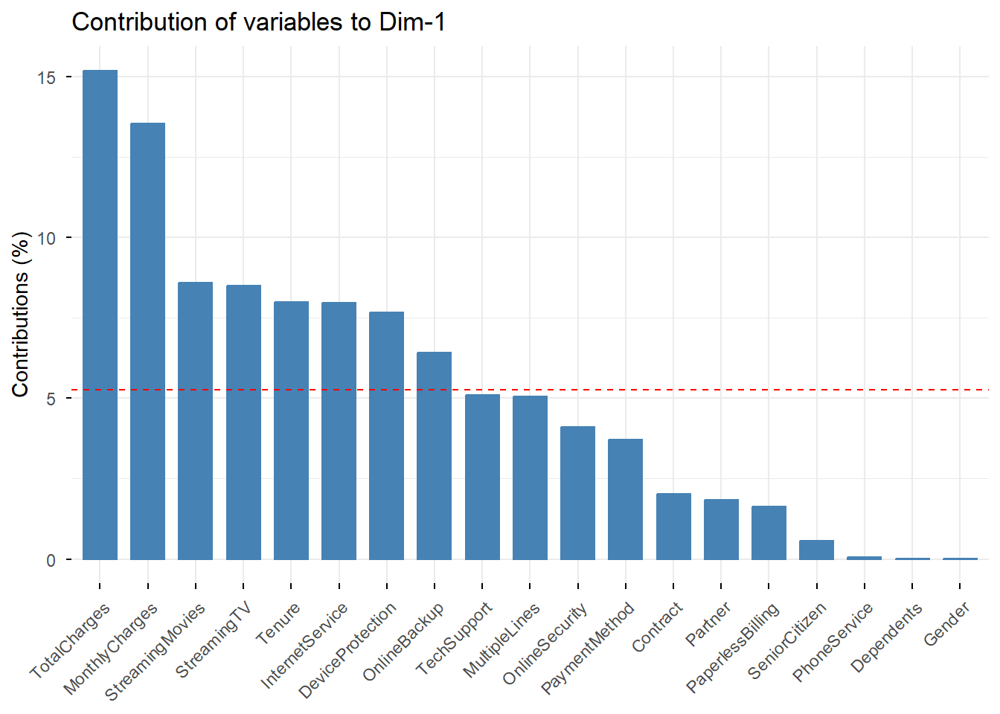
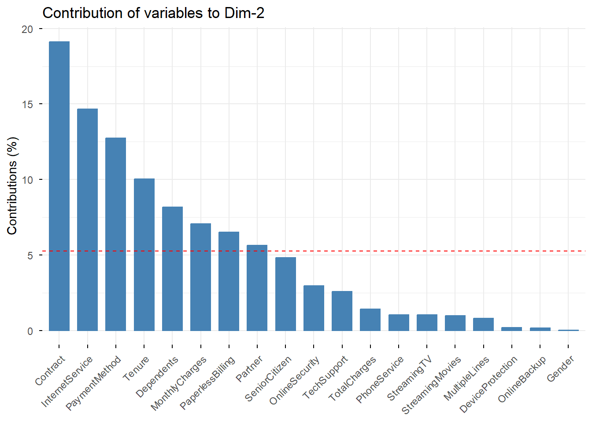
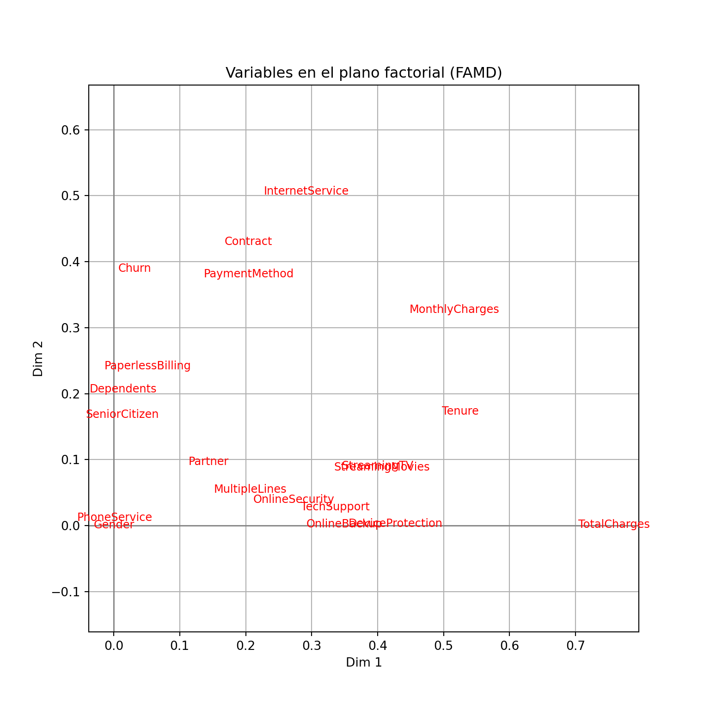
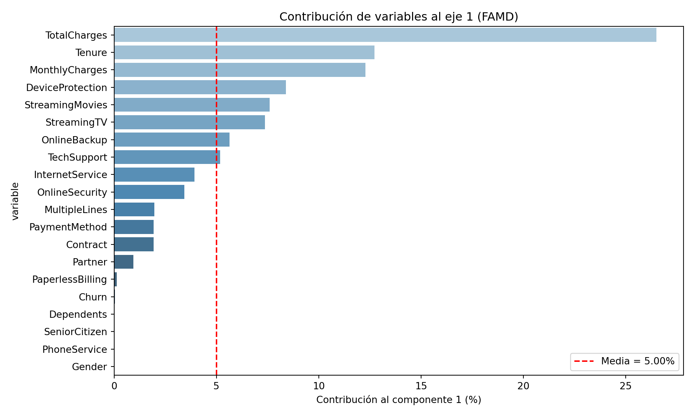
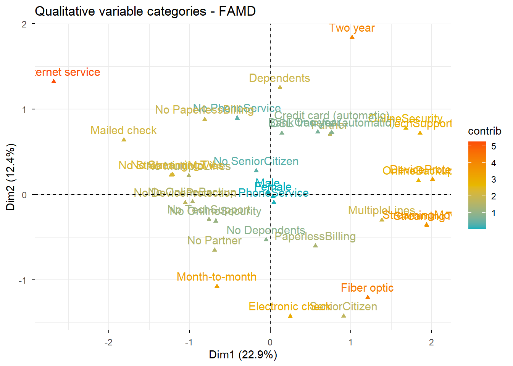

flowchart TD
cat?(¿BBDD Categorica?) --> |"✅"| num_too?(¿Contiene numéricas?)
num_too? --> |"✅"| FAMD
num_too? --> |"❌"| multiple_cat?(¿Más de dos columnas?)
multiple_cat? --> |"✅"| MCA
multiple_cat? --> |"❌"| CA
cat? --> |"❌"| groups?(¿Columnas agrupadas?)
groups? --> |"✅"| MFA
groups? --> |"❌"| shapes?(Analysing shapes?)
shapes? --> |"✅"| GPA
shapes? --> |"❌"| PCA
Anàlisis factorial per a Dades mixtes (FAMD)
1 Introducción
El Análisis Factorial de Datos Mixtos (FAMD) es una potente técnica estadística que se utiliza para analizar conjuntos de datos que contienen variables numéricas y categóricas. Amplía el análisis factorial tradicional para gestionar tipos de datos mixtos, proporcionando una comprensión integral de la estructura subyacente de conjuntos de datos complejos.
Para poder realizar los métodos, necesitaremos importar las siguientes librerias:
## Import libraries
library(FactoMineR)
library(factoextra)import prince
import numpy as np
import pandas as pd
import matplotlib.pyplot as plt
import matplotlib.cm as cm
import seaborn as sns
from matplotlib.colors import LinearSegmentedColormap, Normalize2 Planteamiento del problema
Descripció de la columna:
Gender: El gènere del client: Home (1), Femení (0).
SeniorCitizen: Indica si el client té 65 anys o més: No (0), Sí (1).
Partner: El contracte de servei és revenut pel soci: No (0), Sí (1).
Dependents: Indica si el client viu amb algun dependent: No (0), Sí (1).
Tenure: Indica l’import total de mesos que el client ha estat amb l’empresa.
PhoneService: Indica si el client es subscriu al servei de telèfon de casa amb l’empresa: No (0), Sí (1).
MultipleLines: Indica si el client es subscriu a diverses línies telefòniques amb l’empresa: No (0), Sí (1).
InternetService: Indica si el client es subscriu al servei d’Internet amb l’empresa: No (0), DSL (1), Fibra òptica (2).
OnlineSecurity: Indica si el client es subscriu a un servei addicional de seguretat en línia prestat per l’empresa: No (0), Sí (1), NA (2).
OnlineBackup: Indica si el client es subscriu a un servei de backup online addicional proporcionat per l’empresa: No (0), Sí (1), NA (2).
DeviceProtection: Indica si el client es subscriu a un pla addicional de protecció de dispositius per als seus equips d’Internet proporcionats per l’empresa: No (0), Sí (1), NA (2).
TechSupport: Indica si el client es subscriu a un pla de suport tècnic addicional de l’empresa amb temps d’espera reduïts: No (0), Sí (1), NA (2).
StreamingTV: Indica si el client utilitza el seu servei d’Internet per transmetre la programació de televisió d’un proveïdor de tercers: No (0), Sí (1), NA (2). L’empresa no cobra cap càrrec addicional per aquest servei.
StreamingMovies: Indica si el client utilitza el seu servei d’Internet per transmetre pel·lícules d’un proveïdor de tercers: No (0), Sí (1), NA (2). L’empresa no cobra cap càrrec addicional per aquest servei.
Contract: Indica el tipus de contracte actual del client: Mes a mes (0), Un any (1), Dos anys (2).
PaperlessBilling: Indica si el client ha triat facturació sense paper: No (0), Sí (1).
PaymentMethod: Indica com el client paga la seva factura: transferència bancària - automàtica (0), targeta de crèdit - automàtica (1), xec electrònic (2), xec per correu (3).
MonthlyCharges: Indica el total de la quota mensual actual del client per a tots els seus serveis de l’empresa.
TotalCharges: Indica el total de càrrecs del client.
Churn: Indica si el client es talla o no: No (0), Sí (1).
## Import data
df <- read.csv('https://raw.githubusercontent.com/nchelaru/data-prep/refs/heads/master/telco_cleaned_renamed.csv')
## Preview data
head(df) Gender SeniorCitizen Partner Dependents Tenure PhoneService
1 Female No SeniorCitizen Partner No Dependents 1 No PhoneService
2 Male No SeniorCitizen No Partner No Dependents 34 PhoneService
3 Male No SeniorCitizen No Partner No Dependents 2 PhoneService
4 Male No SeniorCitizen No Partner No Dependents 45 No PhoneService
5 Female No SeniorCitizen No Partner No Dependents 2 PhoneService
6 Female No SeniorCitizen No Partner No Dependents 8 PhoneService
MultipleLines InternetService OnlineSecurity OnlineBackup
1 No MultipleLines DSL No OnlineSecurity OnlineBackup
2 No MultipleLines DSL OnlineSecurity No OnlineBackup
3 No MultipleLines DSL OnlineSecurity OnlineBackup
4 No MultipleLines DSL OnlineSecurity No OnlineBackup
5 No MultipleLines Fiber optic No OnlineSecurity No OnlineBackup
6 MultipleLines Fiber optic No OnlineSecurity No OnlineBackup
DeviceProtection TechSupport StreamingTV StreamingMovies
1 No DeviceProtection No TechSupport No StreamingTV No StreamingMovies
2 DeviceProtection No TechSupport No StreamingTV No StreamingMovies
3 No DeviceProtection No TechSupport No StreamingTV No StreamingMovies
4 DeviceProtection TechSupport No StreamingTV No StreamingMovies
5 No DeviceProtection No TechSupport No StreamingTV No StreamingMovies
6 DeviceProtection No TechSupport StreamingTV StreamingMovies
Contract PaperlessBilling PaymentMethod MonthlyCharges
1 Month-to-month PaperlessBilling Electronic check 29.85
2 One year No PaperlessBilling Mailed check 56.95
3 Month-to-month PaperlessBilling Mailed check 53.85
4 One year No PaperlessBilling Bank transfer (automatic) 42.30
5 Month-to-month PaperlessBilling Electronic check 70.70
6 Month-to-month PaperlessBilling Electronic check 99.65
TotalCharges Churn
1 29.85 No Churn
2 1889.50 No Churn
3 108.15 Churn
4 1840.75 No Churn
5 151.65 Churn
6 820.50 ChurnVisualizamos la estructura de los datos:
str(df)'data.frame': 7032 obs. of 20 variables:
$ Gender : chr "Female" "Male" "Male" "Male" ...
$ SeniorCitizen : chr "No SeniorCitizen" "No SeniorCitizen" "No SeniorCitizen" "No SeniorCitizen" ...
$ Partner : chr "Partner" "No Partner" "No Partner" "No Partner" ...
$ Dependents : chr "No Dependents" "No Dependents" "No Dependents" "No Dependents" ...
$ Tenure : int 1 34 2 45 2 8 22 10 28 62 ...
$ PhoneService : chr "No PhoneService" "PhoneService" "PhoneService" "No PhoneService" ...
$ MultipleLines : chr "No MultipleLines" "No MultipleLines" "No MultipleLines" "No MultipleLines" ...
$ InternetService : chr "DSL" "DSL" "DSL" "DSL" ...
$ OnlineSecurity : chr "No OnlineSecurity" "OnlineSecurity" "OnlineSecurity" "OnlineSecurity" ...
$ OnlineBackup : chr "OnlineBackup" "No OnlineBackup" "OnlineBackup" "No OnlineBackup" ...
$ DeviceProtection: chr "No DeviceProtection" "DeviceProtection" "No DeviceProtection" "DeviceProtection" ...
$ TechSupport : chr "No TechSupport" "No TechSupport" "No TechSupport" "TechSupport" ...
$ StreamingTV : chr "No StreamingTV" "No StreamingTV" "No StreamingTV" "No StreamingTV" ...
$ StreamingMovies : chr "No StreamingMovies" "No StreamingMovies" "No StreamingMovies" "No StreamingMovies" ...
$ Contract : chr "Month-to-month" "One year" "Month-to-month" "One year" ...
$ PaperlessBilling: chr "PaperlessBilling" "No PaperlessBilling" "PaperlessBilling" "No PaperlessBilling" ...
$ PaymentMethod : chr "Electronic check" "Mailed check" "Mailed check" "Bank transfer (automatic)" ...
$ MonthlyCharges : num 29.9 57 53.9 42.3 70.7 ...
$ TotalCharges : num 29.9 1889.5 108.2 1840.8 151.7 ...
$ Churn : chr "No Churn" "No Churn" "Churn" "No Churn" ...pydf = pd.read_csv('https://raw.githubusercontent.com/nchelaru/data-prep/refs/heads/master/telco_cleaned_renamed.csv')Visualizamos la estructura de los datos:
pydf.info()<class 'pandas.core.frame.DataFrame'>
RangeIndex: 7032 entries, 0 to 7031
Data columns (total 20 columns):
# Column Non-Null Count Dtype
--- ------ -------------- -----
0 Gender 7032 non-null object
1 SeniorCitizen 7032 non-null object
2 Partner 7032 non-null object
3 Dependents 7032 non-null object
4 Tenure 7032 non-null int64
5 PhoneService 7032 non-null object
6 MultipleLines 7032 non-null object
7 InternetService 7032 non-null object
8 OnlineSecurity 7032 non-null object
9 OnlineBackup 7032 non-null object
10 DeviceProtection 7032 non-null object
11 TechSupport 7032 non-null object
12 StreamingTV 7032 non-null object
13 StreamingMovies 7032 non-null object
14 Contract 7032 non-null object
15 PaperlessBilling 7032 non-null object
16 PaymentMethod 7032 non-null object
17 MonthlyCharges 7032 non-null float64
18 TotalCharges 7032 non-null float64
19 Churn 7032 non-null object
dtypes: float64(2), int64(1), object(17)
memory usage: 1.1+ MBLos datos contienen 20 columnas divididas en: - Numéricas: Tenure, MonthlyCharges y TotalCharges - Categóricas: Gender, SeniorCitizen, Partner, Dependents, PhoneService, MultipleLines, InternetService, OnlineSecurity, OnlineBackup, DeviceProtection, TechSupport, StreamingTV, StreamingMovies, Contract, PaperlessBilling, PaymentMethod y Churn (variable respuesta)
Consejo
El objetivo de este estudio es poder estudiar las relaciones y asociaciones que existen en los clientes de la empresa Telecom.
2.1 Entrenamiento
La función FAMD() del paquete FactoMineRse puede utilizar para calcular los planos factoriales. La descripción de la función es la siguiente:
FAMD (base, ncp = 5, sup.var = NULL, ind.sup = NULL, graph = TRUE)base: Undata.framecon n filas (individuos) y p columnas (variables).ncp: El número de dimensiones que se mantienen en los resultados (por defecto 5)sup.var: Un vector que indica los índices de las variables suplementarias.ind.sup: Un vector que indica los índices de los individuos suplementarios.graph: Un valor lógico. Si esVERDADERO, se muestra un gráfico.
A continuación, vamos a calcular el FAMD de la siguiente manera:
## FAMD
res.famd <- FAMD(df, sup.var = 20, graph = FALSE, ncp = 25)La salida que obtenemos con la función FAMD() es una lista que incluye:
print(res.famd)*The results are available in the following objects:
name description
1 "$eig" "eigenvalues and inertia"
2 "$var" "Results for the variables"
3 "$ind" "results for the individuals"
4 "$quali.var" "Results for the qualitative variables"
5 "$quanti.var" "Results for the quantitative variables"La función prince.FAMD() del paquete princese puede utilizar para calcular los planos factoriales. La descripción de la función es la siguiente:
famd = prince.FAMD(n_components = 2, n_iter = 3, copy = True, check_input = True, random_state = 42, engine = "sklearn", handle_unknown = "error")n_components: El número de dimensiones que se mantienen en los resultados (por defecto 2)n_iter: El número de iteraciones de las cuales ha de realizar el FAMD (por defecto 3)copy: Indica si queremos realizar una copia o por el contrario de la base de datoscheck_input: Valida las variables de entradarandom_state: Asigna una semilla para los cálculos
A continuación, vamos a calcular el FAMD de la siguiente manera:
famdPy = prince.FAMD(n_components=10, random_state=42)
famdPy = famdPy.fit(pydf)2.2 Visualización e interpretación
Utilizaremos las siguientes funciones del paquete factoextra para poder obtener las interpretaciones correspondientes:
get_eigenvalue(res.famd): Extraer los valores propios/varianzas retenidas por cada dimensión (eje).fviz_eig(res.famd): Visualizar los valores propios/varianzas.get_famd_ind(res.famd): Extraer los resultados para individuos.get_famd_var(res.famd): Extraer los resultados de las variables cuantitativas y cualitativas.fviz_famd_ind(res.famd)yfviz_famd_var(res.famd): Visualizar los resultados para individuos y variables, respectivamente.
Aviso
Recordad que, para la interpretación de FAMD se ha de realizar lo mismo hecho en clases anteriores en métodos como el ACP, ACS y ACM.
2.3 Eigenvalues y Eigenvectors
La proporción de varianzas retenidas (eigenvalues) por las diferentes dimensiones (ejes) se puede extraer utilizando la función get_eigenvalue() del paquete factoextra de la siguiente manera:
eig.val <- get_eigenvalue(res.famd)
head(eig.val) eigenvalue variance.percent cumulative.variance.percent
Dim.1 5.257621 22.859222 22.85922
Dim.2 2.855902 12.416963 35.27619
Dim.3 1.860948 8.091076 43.36726
Dim.4 1.164287 5.062115 48.42938
Dim.5 1.049924 4.564885 52.99426
Dim.6 1.015145 4.413675 57.40794La función fviz_eig() o fviz_screeplot() del paquete factoextra se puede utilizar para dibujar el diagrama de codo (los porcentajes de inercia explicados por cada dimensión de FAMD):
fviz_screeplot(res.famd)
La proporción de varianzas retenidas (eigenvalues) por las diferentes dimensiones (ejes) se puede extraer utilizando el método .eigenvalues_ de la siguiente manera:
eigenvalues = famdPy.eigenvalues_
famdPy.eigenvalues_summary eigenvalue % of variance % of variance (cumulative)
component
0 36.181 4.36% 4.36%
1 26.517 3.19% 7.55%
2 16.198 1.95% 9.51%
3 11.046 1.33% 10.84%
4 10.134 1.22% 12.06%
5 9.378 1.13% 13.19%
6 9.195 1.11% 14.30%
7 9.107 1.10% 15.39%
8 9.077 1.09% 16.49%
9 9.066 1.09% 17.58%La función fviz_eig() o fviz_screeplot() del paquete factoextra se puede utilizar para dibujar el diagrama de codo (los porcentajes de inercia explicados por cada dimensión de FAMD):
# Hacer el scree plot
plt.figure(figsize=(8, 5))
plt.plot(range(1, len(eigenvalues) + 1), eigenvalues, marker='o')
plt.title('Scree Plot - FAMD')
plt.xlabel('Componentes')
plt.ylabel('Valor propio (Eigenvalue)')
plt.xticks(range(1, len(eigenvalues) + 1))([<matplotlib.axis.XTick object at 0x000001FFA92433D0>, <matplotlib.axis.XTick object at 0x000001FFA92C1B90>, <matplotlib.axis.XTick object at 0x000001FFA91F2CD0>, <matplotlib.axis.XTick object at 0x000001FFA9282550>, <matplotlib.axis.XTick object at 0x000001FFA930BE90>, <matplotlib.axis.XTick object at 0x000001FFA9308450>, <matplotlib.axis.XTick object at 0x000001FFA92BCC50>, <matplotlib.axis.XTick object at 0x000001FFA9281E10>, <matplotlib.axis.XTick object at 0x000001FFA923BD50>, <matplotlib.axis.XTick object at 0x000001FFA921C5D0>], [Text(1, 0, '1'), Text(2, 0, '2'), Text(3, 0, '3'), Text(4, 0, '4'), Text(5, 0, '5'), Text(6, 0, '6'), Text(7, 0, '7'), Text(8, 0, '8'), Text(9, 0, '9'), Text(10, 0, '10')])plt.grid(True)
plt.show()
2.4 Variables
2.4.1 Todas las variables
La función get_mfa_var() del paquete factoextra se utiliza para extraer los resultados de las variables. Por defecto, esta función devuelve una lista con las coordenadas, el coseno\(^2\) y la contribución de todas las variables:
(var <- get_famd_var(res.famd))FAMD results for variables
===================================================
Name Description
1 "$coord" "Coordinates"
2 "$cos2" "Cos2, quality of representation"
3 "$contrib" "Contributions" 2.4.1.1 Coordenadas de las componentes
Se puede acceder a los diferentes componentes de la siguiente manera:
head(var$coord[, 1:4]) Dim.1 Dim.2 Dim.3 Dim.4
Tenure 0.4206809111 0.2864370404 5.868863e-02 0.0218736221
MonthlyCharges 0.7115470075 0.2017404911 2.527110e-03 0.0009313836
TotalCharges 0.7986771845 0.0407946811 2.999847e-02 0.0137505310
Gender 0.0001947487 0.0001642962 3.424638e-06 0.0015453361
SeniorCitizen 0.0304048842 0.1378319021 5.802770e-03 0.0057238890
Partner 0.0969690101 0.1609366512 6.777893e-02 0.37740027282.4.1.2 Coseno\(^2\)
A continuación se muestra el coseno\(^2\) que representa la calidad de la representación en el mapa factorial.
head(var$cos2[, 1:4]) Dim.1 Dim.2 Dim.3 Dim.4
Tenure 1.769724e-01 8.204618e-02 3.444355e-03 4.784553e-04
MonthlyCharges 5.062991e-01 4.069923e-02 6.386284e-06 8.674754e-07
TotalCharges 6.378852e-01 1.664206e-03 8.999080e-04 1.890771e-04
Gender 3.792705e-08 2.699325e-08 1.172814e-11 2.388064e-06
SeniorCitizen 9.244570e-04 1.899763e-02 3.367214e-05 3.276290e-05
Partner 9.402989e-03 2.590061e-02 4.593984e-03 1.424310e-012.4.1.3 Contribuciones
En el siguiente apartado, podemos visualizar la contribución de cada una de las varaibles a las dimensiones.
head(var$contrib[, 1:4]) Dim.1 Dim.2 Dim.3 Dim.4
Tenure 8.001354821 10.029653733 3.1536958900 1.87871471
MonthlyCharges 13.533630663 7.063986094 0.1357969462 0.07999608
TotalCharges 15.190847437 1.428434412 1.6119995933 1.18102638
Gender 0.003704122 0.005752867 0.0001840266 0.13272816
SeniorCitizen 0.578301180 4.826213291 0.3118180199 0.49162203
Partner 1.844351468 5.635230981 3.6421732973 32.41472495La siguiente figura muestra la correlación entre las variables, tanto cuantitativas como cualitativas, y las dimensiones principales, así como la contribución de las variables a las dimensiones 1 y 2. Se utilizan las siguientes funciones del paquete factoextra:
fviz_famd_var(): para representar gráficamente variables cuantitativas y cualitativasfviz_contrib(): para visualizar la contribución de las variables a las dimensiones principales
fviz_famd_var(res.famd, repel = TRUE)
A continuación vamos a visualizar las contribuciones de las variables en la primera dimensión.
# Contribution to the first dimension
fviz_contrib(res.famd, "var", axes = 1)
Seguidamente podemos ver las contribuciones de las variables en la 2a dimensión.
# Contribution to the second dimension
fviz_contrib(res.famd, "var", axes = 2)
La línea discontinua roja en el gráfico anterior indica el valor promedio esperado, si las contribuciones fueran uniformes.
De los gráficos anteriormente expuestos se puede observar que:
Las variables más contribuyentes a la primera dimensión són:
- …
Las variables que más contribuyen a la segunda dimensión son:
- …
2.4.1.4 Coordenadas de las componentes
Se puede acceder a los diferentes componentes de la siguiente manera:
## famd.row_coordinates(pydf) ## Individuos
famdPy.column_coordinates_component 0 1 ... 8 9
variable ...
MonthlyCharges 0.516084 0.326985 ... 0.000024 2.719971e-04
TotalCharges 0.758263 0.001235 ... 0.001354 1.399417e-06
Churn 0.031624 0.389555 ... 0.001300 1.998385e-03
Contract 0.204277 0.430340 ... 0.003679 9.335352e-04
Dependents 0.014209 0.206706 ... 0.000808 1.045339e-06
DeviceProtection 0.426754 0.002936 ... 0.006802 1.348613e-07
Gender 0.000248 0.000380 ... 0.006765 7.022369e-03
InternetService 0.292035 0.506334 ... 0.005546 1.554956e-03
MultipleLines 0.206875 0.054604 ... 0.002214 4.321594e-04
OnlineBackup 0.349894 0.002057 ... 0.001307 1.451828e-03
OnlineSecurity 0.272749 0.039203 ... 0.010315 1.100983e-03
PaperlessBilling 0.051292 0.241663 ... 0.001531 2.319590e-02
Partner 0.143598 0.096932 ... 0.000460 7.417890e-04
PaymentMethod 0.204439 0.381225 ... 0.020124 1.076496e-03
PhoneService 0.001444 0.012175 ... 0.000041 1.245809e-05
SeniorCitizen 0.012635 0.167889 ... 0.000537 4.012970e-03
StreamingMovies 0.406131 0.088201 ... 0.000606 3.132390e-05
StreamingTV 0.399842 0.090072 ... 0.003217 1.702668e-03
TechSupport 0.335530 0.027956 ... 0.000144 5.169755e-06
Tenure 0.525252 0.173087 ... 0.945035 9.635537e-01
[20 rows x 10 columns]2.4.1.5 Coseno\(^2\)
A continuación se muestra el coseno\(^2\) que representa la calidad de la representación en el mapa factorial.
famdPy.column_coordinates_ ** 2component 0 1 ... 8 9
variable ...
MonthlyCharges 2.663429e-01 1.069192e-01 ... 5.978147e-10 7.398242e-08
TotalCharges 5.749627e-01 1.524285e-06 ... 1.834568e-06 1.958368e-12
Churn 1.000095e-03 1.517529e-01 ... 1.690637e-06 3.993541e-06
Contract 4.172909e-02 1.851923e-01 ... 1.353859e-05 8.714880e-07
Dependents 2.018980e-04 4.272720e-02 ... 6.534426e-07 1.092735e-12
DeviceProtection 1.821192e-01 8.619380e-06 ... 4.627334e-05 1.818758e-14
Gender 6.145598e-08 1.445026e-07 ... 4.577077e-05 4.931367e-05
InternetService 8.528444e-02 2.563737e-01 ... 3.075429e-05 2.417889e-06
MultipleLines 4.279747e-02 2.981547e-03 ... 4.902979e-06 1.867618e-07
OnlineBackup 1.224257e-01 4.230329e-06 ... 1.709518e-06 2.107805e-06
OnlineSecurity 7.439183e-02 1.536858e-03 ... 1.064014e-04 1.212164e-06
PaperlessBilling 2.630919e-03 5.840094e-02 ... 2.342487e-06 5.380497e-04
Partner 2.062052e-02 9.395777e-03 ... 2.113838e-07 5.502509e-07
PaymentMethod 4.179515e-02 1.453325e-01 ... 4.049852e-04 1.158845e-06
PhoneService 2.085858e-06 1.482284e-04 ... 1.666081e-09 1.552041e-10
SeniorCitizen 1.596509e-04 2.818686e-02 ... 2.887529e-07 1.610393e-05
StreamingMovies 1.649421e-01 7.779385e-03 ... 3.674741e-07 9.811864e-10
StreamingTV 1.598736e-01 8.112913e-03 ... 1.034660e-05 2.899077e-06
TechSupport 1.125803e-01 7.815585e-04 ... 2.060583e-08 2.672637e-11
Tenure 2.758900e-01 2.995894e-02 ... 8.930918e-01 9.284358e-01
[20 rows x 10 columns]2.4.1.6 Contribuciones
En el siguiente apartado, podemos visualizar la contribución de cada una de las varaibles a las dimensiones.
(famdPy.column_contributions_)component 0 1 ... 8 9
variable ...
MonthlyCharges 0.014264 0.012331 ... 0.000003 3.000298e-05
TotalCharges 0.020957 0.000047 ... 0.000149 1.543644e-07
Churn 0.000874 0.014691 ... 0.000143 2.204343e-04
Contract 0.005646 0.016229 ... 0.000405 1.029748e-04
Dependents 0.000393 0.007795 ... 0.000089 1.153075e-07
DeviceProtection 0.011795 0.000111 ... 0.000749 1.487605e-08
Gender 0.000007 0.000014 ... 0.000745 7.746111e-04
InternetService 0.008071 0.019095 ... 0.000611 1.715214e-04
MultipleLines 0.005718 0.002059 ... 0.000244 4.766988e-05
OnlineBackup 0.009671 0.000078 ... 0.000144 1.601457e-04
OnlineSecurity 0.007538 0.001478 ... 0.001136 1.214453e-04
PaperlessBilling 0.001418 0.009114 ... 0.000169 2.558652e-03
Partner 0.003969 0.003655 ... 0.000051 8.182395e-05
PaymentMethod 0.005650 0.014377 ... 0.002217 1.187443e-04
PhoneService 0.000040 0.000459 ... 0.000004 1.374205e-06
SeniorCitizen 0.000349 0.006331 ... 0.000059 4.426556e-04
StreamingMovies 0.011225 0.003326 ... 0.000067 3.455221e-06
StreamingTV 0.011051 0.003397 ... 0.000354 1.878148e-04
TechSupport 0.009274 0.001054 ... 0.000016 5.702562e-07
Tenure 0.014517 0.006527 ... 0.104116 1.062860e-01
[20 rows x 10 columns]La siguiente figura muestra la correlación entre las variables, tanto cuantitativas como cualitativas, y las dimensiones principales, así como la contribución de las variables a las dimensiones 1 y 2.
# Coordenadas de las variables (componentes 1 y 2)
coords = famdPy.column_coordinates_
# Elegimos los dos primeros componentes
x = coords[0]
y = coords[1]
plt.figure(figsize=(8, 8))
plt.axhline(0, color='gray', lw=1)
plt.axvline(0, color='gray', lw=1)
# Dibujar solo puntos con etiquetas
plt.scatter(x, y, color='white')
for i in range(len(coords)):
plt.text(x[i], y[i], coords.index[i], fontsize=9, color="red" , ha='center', va='center')
plt.title("Variables en el plano factorial (FAMD)")
plt.xlabel("Dim 1")
plt.ylabel("Dim 2")
plt.grid(True)
plt.axis('equal')(np.float64(-0.03791314869182619), np.float64(0.7961761225283498), np.float64(-0.025316678052831332), np.float64(0.531650239109458))plt.show()
A continuación vamos a visualizar las contribuciones de las variables en la primera dimensión.
# Obtener coordenadas de las variables
coords = famdPy.column_coordinates_
# Calcular la contribución (cos²) al eje 1
# Es la coordenada al cuadrado de cada variable en ese eje
contrib = (coords[0] ** 2)
# Normalizar en porcentaje
contrib_percent = 100 * contrib / contrib.sum()
# Ordenar de mayor a menor
contrib_percent = contrib_percent.sort_values(ascending=False)
# Calcular la media
mean_contrib = 100 / len(contrib_percent)
# Graficar
plt.figure(figsize=(10, 6))
sns.barplot(x=contrib_percent.values, y=contrib_percent.index, palette="Blues_d")
plt.axvline(mean_contrib, color='red', linestyle='--', label=f'Media = {mean_contrib:.2f}%')
plt.xlabel('Contribución al componente 1 (%)')
plt.title('Contribución de variables al eje 1 (FAMD)')
plt.legend()
plt.tight_layout()
plt.show()
Seguidamente podemos ver las contribuciones de las variables en la 2a dimensión.
# Obtener coordenadas de las variables
coords = famdPy.column_coordinates_
# Calcular la contribución (cos²) al eje 1
# Es la coordenada al cuadrado de cada variable en ese eje
contrib = (coords[1] ** 2)
# Normalizar en porcentaje
contrib_percent = 100 * contrib / contrib.sum()
# Ordenar de mayor a menor
contrib_percent = contrib_percent.sort_values(ascending=False)
# Calcular la media
mean_contrib = 100 / len(contrib_percent)
# Graficar
plt.figure(figsize=(10, 6))
sns.barplot(x=contrib_percent.values, y=contrib_percent.index, palette="Blues_d")
plt.axvline(mean_contrib, color='red', linestyle='--', label=f'Media = {mean_contrib:.2f}%')
plt.xlabel('Contribución al componente 2 (%)')
plt.title('Contribución de variables al eje 2 (FAMD)')
plt.legend()
plt.tight_layout()
plt.show()
La línea discontinua roja en el gráfico anterior indica el valor promedio esperado, si las contribuciones fueran uniformes.
De los gráficos anteriormente expuestos se puede observar que:
Las variables más contribuyentes a la primera dimensión són:
- …
Las variables que más contribuyen a la segunda dimensión son:
- …
2.4.2 Variables cuantitativas
Para extraer los resultados de las variables cuantitativas, se debe realizar el siguiente proceso:
(quanti.var <- get_famd_var(res.famd, "quanti.var"))FAMD results for quantitative variables
===================================================
Name Description
1 "$coord" "Coordinates"
2 "$cos2" "Cos2, quality of representation"
3 "$contrib" "Contributions" A continuación vamos a visualizar el círculo unitario tal y como extraiamos de la aplicación del ACP. Para no superponer las etiquetas de las variables numéricas, vamos a utilizar el parámetro repel = TRUE.
fviz_famd_var(res.famd, "quanti.var", repel = TRUE,
col.var = "black")
El gráfico de variables (círculo unitario) muestra la relación entre las variables, la calidad de su representación, así como la correlación entre las variables y las dimensiones.
Las variables cuantitativas más contribuyentes se pueden resaltar en el diagrama de dispersión mediante el argumento col.var = "contrib". Esto produce un degradado de colores, que se puede personalizar mediante el argumento gradient.cols.
fviz_famd_var(res.famd, "quanti.var", col.var = "contrib", gradient.cols = c("#00AFBB", "#E7B800", "#FC4E07"), repel = TRUE)
Del mismo modo, puede resaltar variables cuantitativas utilizando sus valores cos\(^2\) que representan la calidad de la representación en el mapa factorial. Si una variable está bien representada por dos dimensiones, la suma del cos\(^2\) se aproxima a uno. Para algunos de los elementos, es posible que se requieran más de 2 dimensiones para representar perfectamente los datos.
fviz_famd_var(res.famd, "quanti.var", col.var = "cos2", gradient.cols = c("#00AFBB", "#E7B800", "#FC4E07"), repel = TRUE)
2.4.3 Variables cualitativas
Al igual que las variables cuantitativas, los resultados de las variables cualitativas se pueden extraer de la siguiente manera:
(quali.var <- get_famd_var(res.famd, "quali.var"))FAMD results for qualitative variable categories
===================================================
Name Description
1 "$coord" "Coordinates"
2 "$cos2" "Cos2, quality of representation"
3 "$contrib" "Contributions" Para visualizar las variables cualitativas, se ha de escribir el siguiente código:
#| echo: true
#| eval: true
#| warning: false
#| message: false
#| error: false
fviz_famd_var(res.famd, "quali.var", col.var = "contrib", gradient.cols = c("#00AFBB", "#E7B800", "#FC4E07"))
La gráfica anterior muestra las categorías de las variables categóricas.
2.5 Individuos
Si se desean hacer gráficos individuales se realiza lo siguiente.
(ind <- get_famd_ind(res.famd))FAMD results for individuals
===================================================
Name Description
1 "$coord" "Coordinates"
2 "$cos2" "Cos2, quality of representation"
3 "$contrib" "Contributions" Para representar gráficamente a los individuos, utilizaremos la función fviz_mfa_ind() del paquete factoextra. Por defecto, los individuos están coloreados en azul. Sin embargo, al igual que las variables, también es posible colorear a los individuos por sus valores de cos2 y contribución:
fviz_famd_ind(res.famd, col.ind = "cos2",
gradient.cols = c("#00AFBB", "#E7B800", "#FC4E07"), repel = TRUE)Las categorias de las variables cualitativas se muestran en negro. Para poder eliminar dichas modalidades, utilizamos el parámetro invisible = "quali.var".
Los individuos con perfiles similares se encuentran cerca en el mapa factorial.
Es posible colorear a los individuos utilizando cualquiera de las variables cualitativas en la tabla de datos inicial. Para ello, se utiliza el argumento habillage en la función fviz_famd_ind().
fviz_mfa_ind(res.famd,
habillage = "Churn", # color by groups
palette = c("#00AFBB", "#E7B800", "#FC4E07"),
addEllipses = TRUE, ellipse.type = "confidence",
repel = TRUE # Avoid text overlapping
) Si lo que queremos es colorear los individuos usando múltiples variables categóricas al mismo tiempo, se deberá de utilizar la función fviz_ellipses() del paquete factoextra de la siguiente forma:
fviz_ellipses(res.famd, c("Churn", "Gender"), repel = TRUE)
También se puede identificar que variables categóricas queremos representar con el id de las variables:
fviz_ellipses(res.famd, 1:2, geom = "point")
Aquesta web està creada por Dante Conti y Sergi Ramírez, (c) 2026